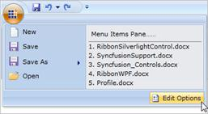

The System Items are items that are added in the bottom region of the Application Menu. System Items can be added through System Items Pane property of the Application Menu. The following code snippet explains the implementation:
|
XAML
<syncfusion:ApplicationMenu.SystemItemsPane> <syncfusion:RibbonItemsControl> <syncfusion:RibbonButton Label="Edit Options" SmallIcon="options.png" HorizontalAlignment="Right" VerticalAlignment="Center" Margin="3" BorderThickness="1" Background="#FFD2E3FA" BorderBrush="#FF5B81B3"/> </syncfusion:RibbonItemsControl> </syncfusion:ApplicationMenu.SystemItemsPane> |

Figure 702: Application Menu with System items